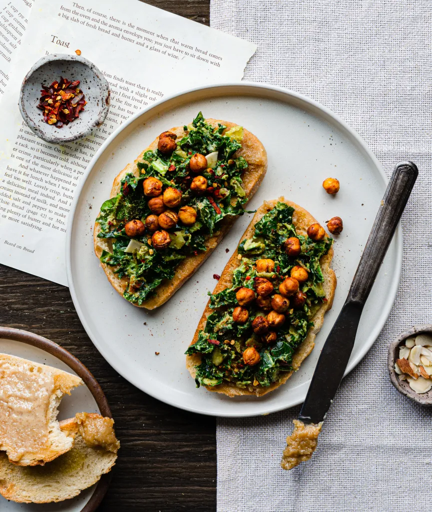

Avocado Kale Salad Toast

Description
This avocado kale salad toast brings the flavor and the texture. Massaged kale put together with mashed avocado, garlic, nutritional yeast, dijon mustard, sliced almonds, and crispy chickpeas. Cool and creamy, but with extra flavor and crunch.
Ingredients
avocado kale salad
- 1.5 cups chopped kale
- 1/2 avocado
- 1 tsp dijon mustard
- 1/2 tbsp lemon juice
- 1 tbsp nutritional yeast
- handful of chopped almonds
- 1 tsp smoked paprika
- 1/2 tsp black pepper
- 1/2 tsp red chili flakes
- 1 tsp capers, optional
- sea salt to taste
crunchy chickpeas
- 1 14 oz. can chickpeas
- 1 tsp smoked paprika
- 1/2 tsp sea salt
- 1 tsp amchur (dried mango powder), optional
- 1/2 tbsp olive oil
Steps
- Mash an avocado with a fork and add the remaining salad ingredients before adding the kale: dijon mustard, lemon juice, nutritional yeast, almonds, garlic powder, smoked paprika, black pepper, red chili flakes, capers, and sea salt. Mix all of this together with the avocado.
- Add the kale a little bit at a time, using a fork to mash it together with the avocado.
- Rinse chickpeas and toss onto a baking sheet. Sprinkle paprika, salt, and amchur on them. Drizzle with olive oil. Air fry for 12-15 minutes at 400 F OR roast in oven for 20-25 minutes at 425 F.
- On toasted bread, add avocado kale salad and chickpeas!